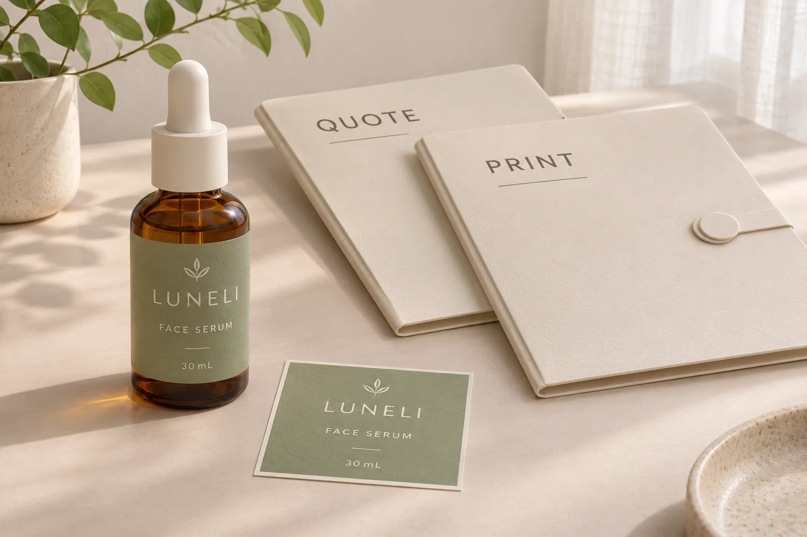

Before sending nonpublic cosmetic label artwork, agree who needs to receive it, what task it may be used for and what happens to the files afterward. Release the identified material when the brand’s authorized owner and the receiving party have acknowledged the handling requirements. Hold the affected transfer when a required condition remains unanswered.
This is a separate decision from approving the label for printing. A brand may have a finished serum layout while its launch details are still restricted. Another project may use established artwork under an already accepted file-handling arrangement. They need different conversations before the same email attachment leaves the designer.

Define the task before choosing the files
Start by asking what the recipient needs to do: assess a quotation, prepare an identified print file, make an authorized correction or produce the accepted job. List the files required for that task rather than forwarding the entire brand working folder.
A quotation discussion may begin with dimensions, quantities, construction direction and a description of the proposed finish. Ask what further material the supplier actually needs. The planning-quote guide explains how to keep incomplete pricing inputs visible. Limited early information should not be presented as sufficient for a later production release.
For a production correction, the printer may need an editable file and relevant assets. The source-package handoff covers that technical completeness. Here, the additional question is whether the intended recipients and uses have been accepted. A complete package can still contain material the brand has not authorized that party to receive.
Obtain a handling response before restricted disclosure
The brand’s responsible owner should identify which project material needs restricted handling and which requirements apply. Do not classify every label file as a legally protected trade secret simply because it has not yet been printed.
WIPO’s trade-secret management guide discusses access according to the task and necessary sharing with external parties alongside contractual measures. That supports a deliberate handling discussion. It does not determine whether your artwork has a particular legal status or whether a proposed agreement is adequate.
Some providers describe a pre-transfer agreement process. For example, CSticker’s OEM/ODM page says it offers an NDA before designs are shared. That is the provider’s own statement, not an independently tested protection result or a YT Labels offer. Ask your proposed supplier what process it can actually acknowledge.
If the brand requires an NDA or particular terms before disclosure, have the responsible business or legal owner resolve those requirements with the proposed recipient first. This guide supplies a purchasing handoff record, not contract wording, an enforceability opinion or a guarantee that a file cannot be disclosed.
Connect the receiving party to the actual work
Ask which organization receives the files and which production or finishing parties need access for the identified job. Request the relevant roles and responsibilities, not an unnecessary directory of employee names. A commercial contact’s receipt of a file does not explain every later handoff.
Where a coordinator is involved, ask how its handling response covers the proposed production route and who responds to a change. The supplier responsibility guide identifies the broader commercial and technical chain. Selecting that arrangement does not by itself settle the information-sharing requirement.
Keep any unresolved onward-transfer question visible. If a new party or different task is proposed, ask whether the accepted requirements cover it before sending the affected material. Conversely, an unchanged routine job may be able to follow an existing acknowledged process once the responsible owner confirms that it still applies.
Use a file-disclosure brief
Keep this record with the current project and the recipient’s response. Identify unanswered requirements directly; a heading marked confidential cannot fill them in.
| Record | Information to agree | Decision or hold |
|---|---|---|
| Material and task | File/revision, responsible brand owner, required work and material excluded from this transfer. | Is each supplied item needed and authorized for this task? |
| Receiving chain | Receiving organization, relevant roles, necessary production participants and response owner. | Does the acknowledgment cover the intended recipients and handoffs? |
| Permitted use | Quotation, preparation or production scope; separately recorded sample, portfolio or other public use. | Has each proposed use been accepted, rather than inferred from a print instruction? |
| Retention and review | Required retention/return/deletion response, reorder needs and changes that reopen review. | Can the parties acknowledge the requested handling, and what remains unresolved? |
- Name the task and ask which specific files it needs.
- Obtain the brand owner’s requirements and the recipient’s handling response.
- Resolve the receiving chain, uses and retention questions relevant to those files.
- Send only the acknowledged package through the agreed channel and record the transfer reference and any later change.
Record retention expectations explicitly. A buyer planning repeat orders may want an accepted master retained under agreed conditions. Another project may require a different outcome after the current task. Ask what the supplier can support and what the response covers, rather than assuming either indefinite storage or immediate deletion.
Likewise, record any proposed public use separately. If the supplier wants to photograph the finished pack for a portfolio, have the authorized brand owner decide the permitted image, timing and scope. Keep that answer distinct from production approval. This is a step for obtaining agreement, not a conclusion about rights under an unspecified contract.
For a hypothetical unreleased serum launch, the receiving party may acknowledge the required production access while a requested public-use condition remains unresolved. Keep public use pending. If a necessary production recipient is still unidentified, hold the affected file transfer and obtain a response. A routine repeat with accepted recipients and unchanged requirements may proceed through the existing process without inventing a new restriction.
Raise the handling question before sending the material
For cosmetic label printing, describe the pack, quantities and proposed task. State whether nonpublic artwork or an agreement must be discussed before transfer, and ask which file-handling arrangement is available for the project.
The form prepares a message. Resolve the required handling first, then send the acknowledged files by the agreed email or WhatsApp route.
Prepare an artwork-handling inquiry